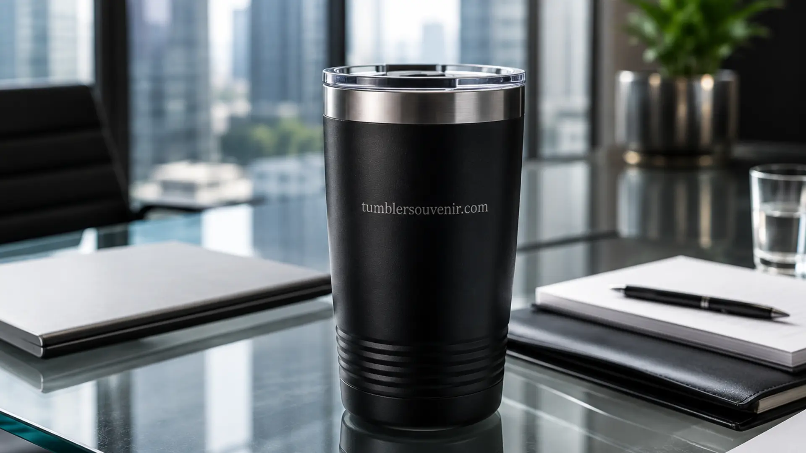

Tumbler Souvenir Terbaik yang Paling Dicari Tahun Ini
Ringkasan
Tumbler souvenir terbaik tahun ini adalah tumbler stainless steel double wall dengan custom logo, karena tahan lama, terlihat premium, dan efektif memperkuat brand recall perusahaan. Permintaan jenis ini meningkat signifikan seiring tren perusahaan beralih dari merchandise sekali pakai ke gift fungsional jangka panjang. tumblersouvenir.com menyediakan seluruh varian ini dengan proses custom yang cepat dan hasil yang siap pakai untuk kebutuhan korporat.
- Tumbler stainless steel double wall adalah jenis souvenir kantor paling diminati tahun ini.
- Souvenir fungsional terbukti meningkatkan brand recall dibanding merchandise sekali pakai.
- Custom logo, warna, dan kemasan menjadi faktor utama nilai jual tumbler souvenir korporat.
- Harga tumbler souvenir bervariasi tergantung material, kapasitas, dan teknik cetak.
- tumblersouvenir.com melayani pemesanan custom dalam jumlah besar untuk kebutuhan perusahaan.
Daftar Isi
- Mengapa Tumbler Souvenir Menjadi Pilihan Utama Gift Korporat?
- Jenis Tumbler Souvenir Apa yang Paling Dicari Tahun Ini?
- Apa Manfaat Tumbler Souvenir bagi Branding Perusahaan?
- Bagaimana Cara Kerja Pemesanan Tumbler Souvenir Custom?
- Berapa Kisaran Harga Tumbler Souvenir Custom?
- Bagaimana Tumbler Souvenir Dibandingkan dengan Jenis Souvenir Korporat Lain?
- Kesalahan Umum Saat Memilih Tumbler Souvenir Korporat
- Kapan Waktu Terbaik Memesan Tumbler Souvenir untuk Perusahaan?
Mengapa Tumbler Souvenir Menjadi Pilihan Utama Gift Korporat?
Tumbler souvenir menjadi pilihan utama gift korporat karena fungsinya yang dipakai setiap hari membuat logo perusahaan terus terlihat oleh penerima maupun orang di sekitarnya. Berbeda dengan souvenir dekoratif yang sering disimpan tanpa digunakan, tumbler dipakai secara aktif di kantor, saat rapat, maupun perjalanan dinas.
Riset di industri promotional product secara umum menunjukkan bahwa item promosi yang bersifat fungsional dan dipakai sehari-hari memiliki masa pakai dan tingkat keterlihatan (impression rate) yang jauh lebih tinggi dibanding merchandise yang hanya dipajang. Fenomena ini konsisten dengan data industri periode beberapa tahun terakhir yang menunjukkan pergeseran preferensi perusahaan dari gift dekoratif ke gift fungsional.
Selain aspek fungsional, tumbler souvenir juga fleksibel untuk berbagai momen: gift ulang tahun perusahaan, seminar, pelatihan internal, hingga hadiah untuk mitra bisnis. Fleksibilitas ini membuat permintaan tumbler souvenir custom terus stabil sepanjang tahun, bukan hanya pada momen tertentu.
Bagi perusahaan yang ingin memesan dalam jumlah besar dengan kualitas terjamin, tumblersouvenir.com menyediakan pilihan material dan kapasitas yang dapat disesuaikan dengan anggaran dan kebutuhan acara.
Jenis Tumbler Souvenir Apa yang Paling Dicari Tahun Ini?
Jenis tumbler souvenir yang paling dicari tahun ini adalah tumbler stainless steel double wall, tumbler dengan fitur infuser buah, dan tumbler dengan desain minimalis warna solid yang mudah dipadukan dengan identitas brand. Ketiga jenis ini mendominasi permintaan karena kombinasi daya tahan, tampilan premium, dan kemudahan custom.

Tumbler stainless steel double wall unggul karena mampu menjaga suhu minuman lebih lama, sehingga dianggap lebih bernilai dibanding tumbler plastik biasa. Tumbler dengan infuser buah cocok untuk perusahaan yang ingin membangun citra sehat dan modern, sering dipilih untuk event kesehatan atau wellness program karyawan.
Sementara tumbler minimalis warna solid tetap menjadi favorit karena mudah dipadukan dengan warna corporate identity tanpa terlihat berlebihan. Selain tiga jenis utama tersebut, varian tumbler dengan handle atau strap juga meningkat peminatnya karena lebih praktis dibawa saat commuting maupun perjalanan dinas, sehingga logo perusahaan lebih sering terlihat di ruang publik.
Apa Manfaat Tumbler Souvenir bagi Branding Perusahaan?
Manfaat utama tumbler souvenir bagi branding perusahaan adalah meningkatkan brand recall secara berkelanjutan melalui penggunaan harian, sekaligus membangun persepsi positif terhadap perusahaan sebagai pemberi gift yang thoughtful dan berkualitas. Efek ini terjadi karena penerima melihat logo perusahaan berulang kali dalam konteks yang netral dan personal, bukan dalam konteks iklan.
Selain aspek branding, tumbler souvenir juga berfungsi sebagai bentuk apresiasi yang mempererat hubungan dengan karyawan, klien, maupun mitra bisnis. Gift yang terasa bermanfaat cenderung meninggalkan kesan lebih baik dibanding gift yang hanya bersifat formalitas.
Bagi perusahaan yang serius membangun konsistensi brand melalui merchandise, penting memilih partner produksi yang memahami detail teknis custom, seperti pemilihan warna yang presisi dan penempatan logo yang proporsional. tumblersouvenir.com berpengalaman menangani kebutuhan custom seperti ini untuk berbagai skala perusahaan.
Bagaimana Cara Kerja Pemesanan Tumbler Souvenir Custom?
Cara kerja pemesanan tumbler souvenir custom umumnya dimulai dari konsultasi kebutuhan, pemilihan desain dan material, proses cetak logo, hingga quality control sebelum pengiriman. Tahapan ini penting untuk memastikan hasil akhir sesuai dengan identitas brand perusahaan.
Secara umum, alur pemesanan mencakup: pertama, penentuan jumlah dan budget; kedua, pemilihan jenis tumbler dan warna; ketiga, penyerahan file logo dalam format vektor agar hasil cetak tajam; keempat, proses produksi dan sampling; dan kelima, pengecekan akhir sebelum pengiriman ke alamat perusahaan atau lokasi acara.
Untuk perusahaan yang memiliki tenggat waktu ketat, seperti kebutuhan mendadak untuk acara internal, penting berkomunikasi di awal mengenai lead time produksi agar tidak terjadi keterlambatan. tumblersouvenir.com memfasilitasi seluruh tahapan ini dengan tim yang responsif, sehingga perusahaan dapat fokus pada acara tanpa khawatir soal detail teknis produksi souvenir.
Berapa Kisaran Harga Tumbler Souvenir Custom?
Harga tumbler souvenir custom umumnya dipengaruhi oleh material, kapasitas, teknik cetak logo, dan jumlah pemesanan, sehingga dapat bervariasi cukup signifikan antara satu jenis dengan jenis lainnya. Semakin besar jumlah pesanan, umumnya harga per unit akan semakin kompetitif.
Beberapa faktor yang memengaruhi harga antara lain jenis material (stainless steel umumnya lebih tinggi dibanding plastik food grade), teknik cetak (sablon, laser engraving, atau UV printing), serta tambahan fitur seperti infuser atau tutup anti bocor. Kemasan tambahan seperti box eksklusif juga dapat memengaruhi total biaya.
Karena variasi ini cukup luas, perusahaan disarankan melakukan konsultasi harga langsung berdasarkan spesifikasi yang dibutuhkan agar mendapatkan penawaran yang paling sesuai dengan budget dan ekspektasi kualitas.
Bagaimana Tumbler Souvenir Dibandingkan dengan Jenis Souvenir Korporat Lain?
Dibandingkan dengan jenis souvenir korporat lain seperti mug keramik, notebook, atau payung, tumbler souvenir umumnya unggul dari sisi frekuensi pemakaian dan daya tahan fisik. Mug keramik misalnya, cenderung hanya digunakan di dalam ruangan dan berisiko pecah, sementara tumbler dirancang untuk mobilitas tinggi, baik dibawa ke kantor, saat commuting, maupun perjalanan dinas.
Notebook dan alat tulis, meski tetap relevan, memiliki masa pakai yang terbatas karena akan habis terpakai atau tergantikan seiring waktu. Payung, di sisi lain, hanya digunakan pada kondisi cuaca tertentu sehingga frekuensi keterlihatan logo menjadi kurang konsisten dibanding tumbler yang dipakai hampir setiap hari untuk kebutuhan minum.
Dari sisi persepsi nilai, tumbler stainless steel juga cenderung dianggap sebagai barang dengan nilai guna dan harga jual yang lebih tinggi dibanding souvenir kertas atau plastik, sehingga penerima cenderung lebih menghargai dan menyimpannya lebih lama. Faktor inilah yang membuat banyak perusahaan tetap mengutamakan tumbler souvenir sebagai pilihan utama dibanding kategori merchandise lainnya.
Kesalahan Umum Saat Memilih Tumbler Souvenir Korporat
Kesalahan umum saat memilih tumbler souvenir korporat antara lain terlalu fokus pada harga termurah tanpa mempertimbangkan kualitas material, mengabaikan detail teknis logo, dan tidak memperhitungkan lead time produksi. Ketiga hal ini sering menyebabkan hasil akhir tidak sesuai ekspektasi.
Memilih material berkualitas rendah demi menekan biaya justru dapat merugikan citra perusahaan, karena souvenir yang cepat rusak akan meninggalkan kesan negatif. Selain itu, file logo yang tidak dalam format vektor sering menghasilkan cetakan buram atau pecah, terutama untuk logo dengan detail rumit.
Perencanaan waktu juga krusial. Banyak perusahaan baru memesan souvenir mendekati hari acara, padahal proses produksi custom membutuhkan waktu untuk sampling dan quality control. Perencanaan yang matang akan menghasilkan output yang lebih maksimal.
Kapan Waktu Terbaik Memesan Tumbler Souvenir untuk Perusahaan?
Waktu terbaik memesan tumbler souvenir untuk perusahaan adalah minimal tiga hingga empat minggu sebelum acara berlangsung, agar proses konsultasi desain, sampling, dan produksi dapat berjalan tanpa terburu-buru. Pemesanan mendadak berisiko membatasi pilihan material maupun teknik cetak yang tersedia.
Bagi perusahaan yang memiliki agenda tahunan seperti ulang tahun perusahaan, gathering karyawan, atau seminar rutin, perencanaan souvenir sebaiknya dilakukan sejak awal tahun agar anggaran dan desain dapat dipersiapkan secara matang, sekaligus memberi ruang untuk revisi jika diperlukan.
Perencanaan yang lebih awal juga memberi keleluasaan untuk bernegosiasi harga terbaik, terutama untuk pemesanan dalam jumlah besar, karena tim produksi memiliki waktu yang cukup untuk menyusun jadwal produksi yang efisien.
Tumbler souvenir stainless steel dengan custom logo tetap menjadi pilihan terbaik untuk gift korporat tahun ini karena kombinasi fungsi, daya tahan, dan nilai branding yang tinggi.
Perusahaan yang ingin memastikan hasil custom berkualitas, sesuai budget, dan tepat waktu dapat langsung berkonsultasi dan memesan melalui tumblersouvenir.com untuk mendapatkan penawaran terbaik sesuai kebutuhan acara maupun program branding perusahaan.